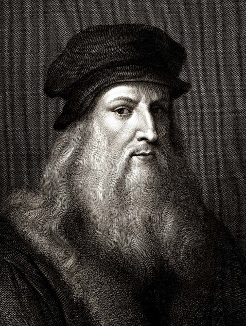

Historia de "La Mona Lisa"
 Desde el siglo XVI, la sonrisa de la Mona Lisa ha intrigado al mundo. Leonardo da Vinci la pintó entre 1503 y 1506, usando una técnica revolucionaria para su tiempo: el sfumato, que suaviza los bordes y crea esa sensación de vida que parece respirar desde el cuadro.
Más allá de los misterios sobre quién fue la modelo, la obra representa la búsqueda renacentista de la perfección, el equilibrio entre razón y belleza.
Hoy, tras siglos de historia, sigue mirándonos con esa expresión que parece cambiar cada vez que la observamos.
Desde el siglo XVI, la sonrisa de la Mona Lisa ha intrigado al mundo. Leonardo da Vinci la pintó entre 1503 y 1506, usando una técnica revolucionaria para su tiempo: el sfumato, que suaviza los bordes y crea esa sensación de vida que parece respirar desde el cuadro.
Más allá de los misterios sobre quién fue la modelo, la obra representa la búsqueda renacentista de la perfección, el equilibrio entre razón y belleza.
Hoy, tras siglos de historia, sigue mirándonos con esa expresión que parece cambiar cada vez que la observamos.
La Mona Lisa: el retrato que cambió la historia del arte
La Mona Lisa, también conocida como La Gioconda, es sin duda una de las obras más emblemáticas y estudiadas de la historia del arte. Pintada por Leonardo da Vinci entre 1503 y 1506, representa no solo la habilidad técnica de su autor, sino también el espíritu intelectual del Renacimiento italiano. Su fama ha trascendido siglos, y su enigmática sonrisa sigue generando interpretaciones y teorías que la mantienen viva en la cultura popular y académica.
Leonardo da Vinci: el genio detrás del retrato
Leonardo da Vinci (1452–1519) fue mucho más que un pintor. Ingeniero, anatomista, inventor, músico y filósofo, encarnó el ideal renacentista del hombre universal. Su interés por la naturaleza humana y el estudio de la anatomía lo llevaron a observar el cuerpo con una precisión científica que luego trasladó a sus obras. En la Mona Lisa, cada detalle —desde la piel hasta la mirada— revela esa obsesión por comprender la estructura del ser humano y su relación con el mundo. Leonardo no buscaba simplemente retratar una mujer, sino capturar la esencia de la vida misma a través del arte.
La técnica del sfumato: el secreto de su misterio
Uno de los aspectos más fascinantes de la obra es el uso del sfumato, una técnica desarrollada por el propio Leonardo. Consiste en aplicar capas muy finas de pintura que difuminan los bordes y eliminan las líneas duras, creando una transición suave entre luz y sombra. Gracias a este efecto, el rostro de la Mona Lisa parece moverse y respirar, y su expresión cambia dependiendo del ángulo y la luz desde donde se la mire. Este dominio técnico marcó un antes y un después en la historia de la pintura, influenciando a generaciones de artistas posteriores.
La historia y el enigma detrás del retrato
Se cree que la modelo fue Lisa Gherardini, esposa del comerciante florentino Francesco del Giocondo, de ahí su apodo “La Gioconda”. Sin embargo, Leonardo nunca entregó el cuadro a su cliente y lo llevó consigo durante el resto de su vida, lo que ha alimentado múltiples teorías sobre su significado personal. Actualmente, la obra se exhibe en el Museo del Louvre en París, protegida por un cristal antibalas y observada por millones de visitantes cada año. El robo del cuadro en 1911, su recuperación dos años después y su aparición en incontables obras culturales la han convertido en un verdadero icono universal.
Curiosidades y legado artístico
-El cuadro mide apenas 77 x 53 cm, pero su impacto es incalculable.
-La Mona Lisa ha sobrevivido a guerras, traslados y restauraciones, y su estado de conservación es notable.
-Su sonrisa ha sido analizada por expertos en psicología, arte y neurología, quienes aún debaten si expresa felicidad, ironía o melancolía.
-Leonardo tardó varios años en completarla, realizando pequeñas correcciones hasta poco antes de su muerte.
-Fue una de las primeras pinturas en mostrar un paisaje atmosférico difuminado, algo totalmente innovador en su tiempo.
Una obra eterna
Más de quinientos años después, la Mona Lisa sigue siendo un espejo del alma humana. Leonardo da Vinci logró condensar en un solo rostro el misterio, la belleza y la inteligencia del ser humano, convirtiendo este retrato en una pieza inmortal. Su perfección técnica, su aura enigmática y su capacidad para generar preguntas la mantienen como el retrato más famoso del mundo, una obra que no envejece, sino que evoluciona con cada mirada.